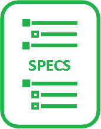
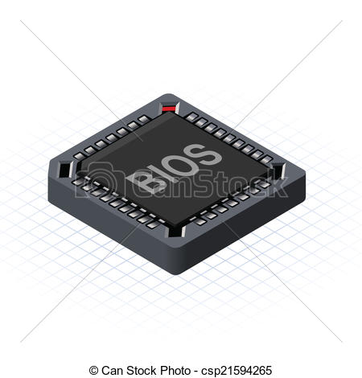

Home
Firmwares
Published downloads
Bugs & debugging
Learn more about GFX bug handling
Tips that may help to solve your issue in less time
How to report bugs
How to get kernel backtrace
How to get GPU error state
How to dump Video BIOS
How to debug suspend-resume issues
Ubuntu Tips
Installing a new hardrive
Formating a disk with parted
Public key and private keys
Simple Kexec example
Kexec (archlinux)
adduser guide
Add user to group
intel-gpu-tools
Reference Manual
Repository from cgit
Git topics
Cherry-Picking specific commits from another branch
Git Branching - Rebasing
Git Bisect
FAQ
About us
Debian packages
×
graphic stack
drm-intel-qa
drm-tip
drm-intel-testing
mainline
Educational sessions
×
video clips
Jira
×
Automation KanBan
GDC QA KanBan
Automation Team Backlog
Automation Team
×
Gerrit in asgard.intel.com
Jenkis in asgard.intel.com
Repositories in github.intel.com
Benchmarks
×
benchmarks
Linux Isos
×
Clonezilla
Fedora
Ubuntu
Mint
Raspian
Reports and Tools
Reports on TestReportCenter
Reports on linuxgraphics.intel.com
igt_all visualization
igt_fast_feedback visualization
Gitlist
QA Tag on bifrost.intel.com
Gitlist on bifrost.intel.com
Gitlist on github.com
Execution manager
×
IGT Execution Manager
Watchdog
 Platform specs
×
Specs
Hardware attached to automated system
Bios

For Apollo
For SKL/KBL
For GLK
Common tools
BMP
Dediprog
Miscellaneous
Clips
3DGames
EFI Shell by USB
Format USB write protected (tool for windows)
Wallpapers
FI
×
IGT visualization (Public)
IGT visualization (Internal)
Known issues
CI results
FI kernels
Shortcuts
×
Gfx QA Roles and Responsabilities
Test Planning
Bugzilla
Platform BKCs
Intel Product Specifications